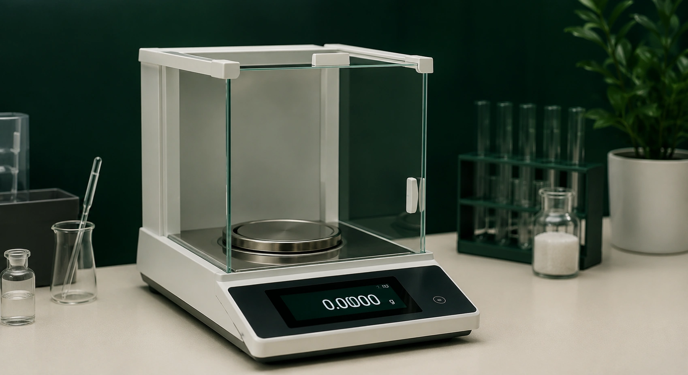

Qué son las PPM y cómo convertirlas a mg/L o g/L fácilmente
Convertí ppm a mg/L y g/L sin errores: qué significan, la fórmula exacta y ejemplos de laboratorio resueltos paso a paso.
Leer artículo →Artículos sobre química analítica, laboratorio industrial y conceptos fundamentales. Para técnicos, estudiantes y profesionales.
Convertí ppm a mg/L y g/L sin errores: qué significan, la fórmula exacta y ejemplos de laboratorio resueltos paso a paso.
Leer artículo →Aprendé a calcular el factor de equivalencia en Karl Fischer y optimizá la determinación de humedad en tu laboratorio industrial con ejemplos prácticos.
Leer artículo →Aprendé a elegir entre el test de Dixon y Grubbs para eliminar outliers en tu laboratorio según el tamaño de muestra y las normas ISO 5725.
Leer artículo →Aprendé a calcular el presupuesto de incertidumbre paso a paso para tus titulaciones en el laboratorio según la guía GUM y asegura tus resultados.
Leer artículo →Aprendé a verificar y calibrar matraces, pipetas y buretas mediante gravimetría. Guía práctica paso a paso según la norma ISO 4787 para laboratorios.
Leer artículo →Evitá errores de enrase y pesada. Descubrí la guía paso a paso para preparar soluciones estándar con la precisión y rigurosidad que exige la ISO 17025.
Leer artículo → Normativa y calidad
Normativa y calidad
Guía práctica sobre LOD y LOQ en química analítica. Aprendé qué significan, cómo diferenciarlos y cuáles son los 3 métodos estadísticos más utilizados para calcularlos con precisión en tu laboratorio.
Leer artículo → Instrumentación
Instrumentación
Dominá la preparación y el análisis de tus curvas de calibración. Una guía paso a paso para ingresar datos correctamente, evaluar el coeficiente de correlación (R²), interpolar muestras y asegurar la trazabilidad.
Leer artículo → Química básica
Química básica
Guía completa sobre la concentración molar: definición, fórmula, ejemplos resueltos y los errores más comunes en la preparación de soluciones en el laboratorio.
Leer artículo →Análisis de los niveles de dureza típicos en la región, su impacto en calderas, intercambiadores y redes industriales, y qué establece el Código Alimentario Argentino.
Leer artículo →Desde la preparación del titulante hasta la detección del punto de equivalencia: los errores sistemáticos que más afectan la exactitud en volumetrías ácido-base y redox.
Leer artículo →Molaridad y normalidad son las dos unidades de concentración más usadas. Muchos técnicos las confunden. Explicamos las diferencias, los factores de equivalencia y cuándo corresponde cada una.
Leer artículo →El pKa determina a qué pH un ácido está a la mitad de su disociación y cuándo es efectivo como buffer. Todo sobre Henderson-Hasselbalch con ejemplos resueltos paso a paso.
Leer artículo →Ley de Beer-Lambert, cómo construir una curva de calibración correctamente, cómo interpretar el R² y calcular concentraciones de muestras desconocidas.
Leer artículo →
Normativa y calidadQué es la incertidumbre, por qué la exige ISO 17025, componentes Tipo A y Tipo B, incertidumbre combinada y expandida. Con un ejemplo completo resuelto paso a paso.
Leer artículo →